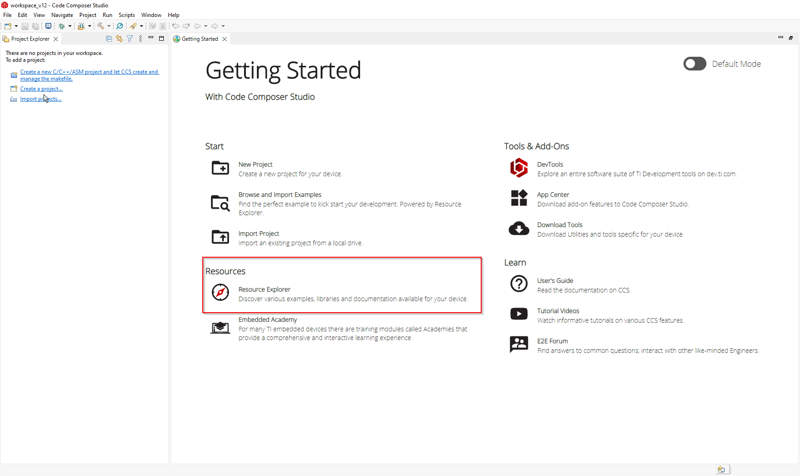
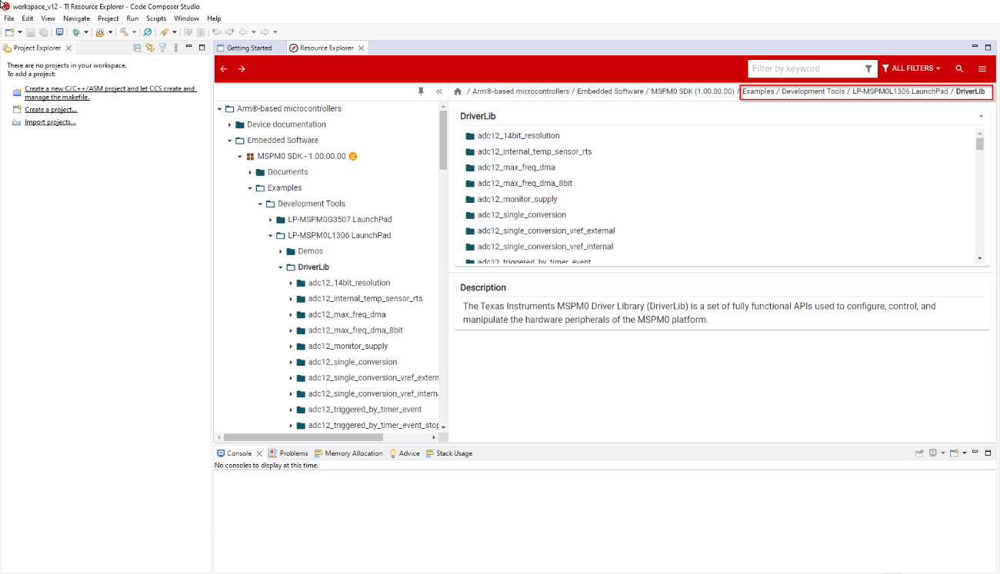
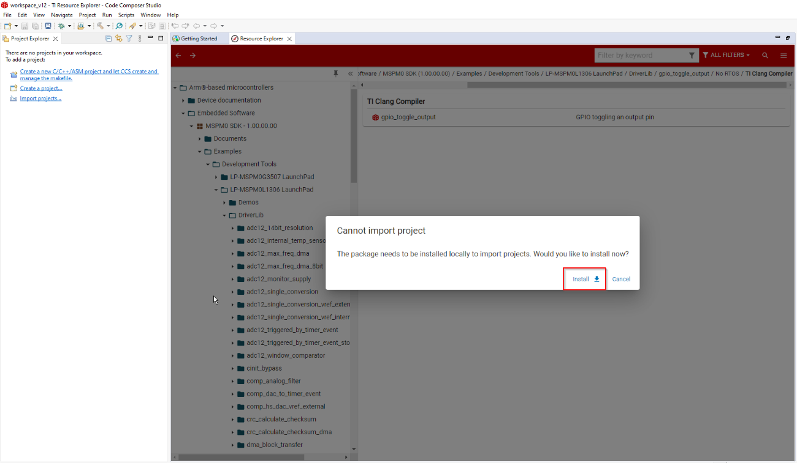

MSPM0 SDK QuickStart Guide for CCS¶
1. Introduction¶
This guide is intended to assist users in the initial setup and demonstration of running their first MSPM0 application with CCS using TI Arm Clang. This guide is not intended to explain the functionality of CCS. Please refer to the documentation available through the Help menu in CCS or the CCS IDE Guide for MSPM0 MCUs included with the MSPM0 SDK documentation.
2. Prerequisites¶
The user is expected to have downloaded the following:
SysConfig 1.20.x (Included in latest version of CCS)
TI Clang 3.2.1.LTS (Included in latest version of CCS)
3. Import and Build Example in CCS¶
In CCS, open the Resource Explorer from the Getting Started page
 Choose MSPM0 in the page directory and select the examples folder

Navigate to the DriverLib examples following the filepath below
 Choose an example, choose the TI Clang compiler folder, and import to CCS IDE by pressing on the 3 dots next to the project file

If the SDK is not installed, an error message will pop up and prompt the user to install the SDK
 Once the SDK is installed, import to CCS IDE by pressing on the 3 dots next to the project file
To build the example, click on your example in the Project Explorer tab, and then select the Build icon at the top.
Note: Some examples include support for SysConfig to allow for an easier device configuration.The image below also shows the Sysconfig file that is used to configure the device for the example project.For a complete list of examples supporting SysConfig, check the MSPM0 SDK Examples Guide.For more general information about using SysConfig with MSPM0, please refer to Using SysConfig with MSPM0 available in the SDK’s Tools Guide.
4. Known Issues and Frequently Asked Questions (FAQs)¶
Please refer to Known Issues and FAQ inside the SDK.